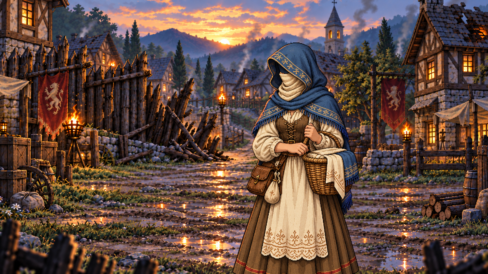

RPGThreeJS · Étude de mise en scène
Après le danger
Bois-Clair sauvé, avant les remerciements et le choix de récompense.


01 / 05
Le danger est retombé
Le lieu reste endommagé ; deux présences immobiles après la défense.
Chargement des cinq illustrations…
Réduction des mouvements active. Vous pouvez parcourir les plans avec les flèches ; la lecture démarre uniquement sur demande.